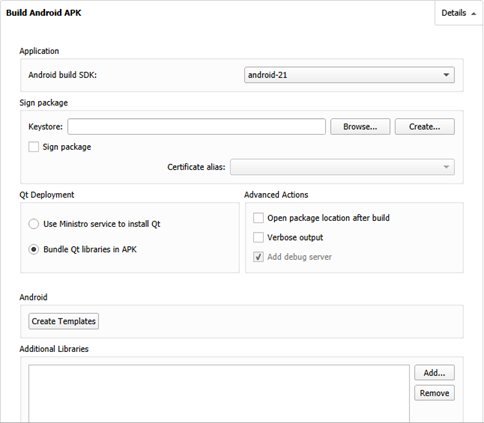
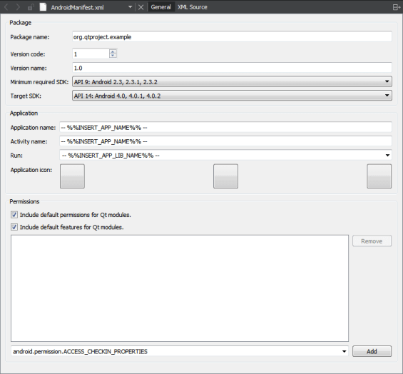

Deploying Applications to Android Devices
On Android, applications are distributed in a specially structured type of ZIP package called an APK. Qt Creator supports the following methods of deployment for Android applications:
- As a stand-alone, distributable application package (APK).
- As a minimal APK that contains a dependency to the Ministro tool. The Ministro tool downloads the necessary Qt libraries from a repository of your choice.
To specify settings for application packages, select Projects > Build Android APK > Details.
For more information about options that you have for running applications, see Specifying Run Settings for Android Devices.
Using Ministro to Install Qt Libraries
To minimize the size of your APK, you can package the application with an external dependency called Ministro. If a user downloads your application, and it is the first application on their device to depend on Ministro, they are asked to install Ministro before they can run your application.
Ministro serves as a central repository for Qt libraries. This enables several applications to share the libraries, which only need to be installed once. To use this deployment method, you must set up a repository for the libraries that you want to distribute. To specify the repository URL, edit the file android/res/values/libs.xml, which is created by Qt Creator.
To use Ministro to install the Qt libraries, select the Use Ministro service to install Qt option.
Packaging Applications
Because bundling applications as APK packages is not trivial, Qt 5 provides a deployment tool called androiddeployqt. When you deploy an application using a Qt for Android Kit, Qt Creator uses the androiddeployqt tool to create the necessary files and to bundle them into an APK:
- Java files, which serve as the entry point into your application and that automatically load Qt and execute the native code in your application.
- AndroidManifest.xml, which provides meta-information about your application.
- Other XML files, which specify the dependencies of your application.
- Resource files.
- Libraries and QML files, which can be included in the project depending on the deployment method that you select.
- Gradle wrappers that are needed to download and use Gradle.
- Gradle script that is needed by Java IDEs, such as Android Studio. It allows the user to extend the Java part without copying our Java sources. It also allows the IDEs to provide code completion, syntax highlighting, and so on.
The Gradle wrappers and scripts are bundled only if you use Gradle to build the application packages. For more information, see Connecting Android Devices.
To view the packages that the androiddeployqt tool created, select the Open package location after build check box.
The packages are deployed on the connected Android devices. To switch the device used as a default device for the selected kit, select Projects > Run > Reset Default Devices. The setting applies until you restart Qt Creator. For more information, see Selecting Android Devices.
For more information about the androiddeployqt tool, see Deploying an Application on Android.
Specifying Settings for Packages
You can specify settings for the androiddeployqt tool in Qt Creator and in the project .pro file. To specify settings in Qt Creator, select Projects > Build Android APK > Details.

The anddroiddeployqt tool uses the information in the project .pro file to create APKs. For more information about the qmake variables that you can set in the .pro file to tailor the APK, see Deploying an Application on Android.
You can view information about what the anddroiddeployqt tool is doing in the Compile Output pane. To view additional information, select the Verbose output check box.
Selecting API Level
In the Android build SDK field, you can select the API level to use for building the application. Usually, you should select the newest API level available.
This field does not specify the minimum supported API level nor the target API level, which you can specify in the Android manifest file. For more information about Android API levels, see What is API Level?.
Signing Android Packages
To publish your application, you must sign it by using a public-private key pair that consists of a certificate and a corresponding private key and is identified by an alias. The key pair is used to verify that the future versions of your application are actually created by you.
Warning: Keep the key pair in a safe place and take back up copies, because you cannot update the application if you lose the key pair.
You can use Qt Creator to generate a keystore and a self-signed certificate. The generated certificate has the structure of an X.509 v3 digital certificate. It contains information about the version, serial number, and validity period of the certificate, the ID of the algorithm that is used to encrypt the data, the organization that issued the certificate, and the subject (owner) of the certificate. In case of a self-signed certificate, the issuer and owner of the certificate are the same. In addition, the certificate contains information about the algorithm that is used to sign the certificate, as well as the signature of the certificate.
The keystore is protected by a password. In addition, you can protect each alias with its individual password.
When you sign an Android application, you must select a keystore that contains certificates and a certificate alias from the keystore. The public key (certificate) for the alias is embedded into the APK during signing.
To create a keystore and a self-signed certificate:
- In the Keystore field, select Create to create a new keystore that contains one key pair in the Create Keystore and a Certificate dialog:

- In the Keystore group, enter a password to protect the keystore.
- In the Certificate group, specify the key size and validity period of the certificate. You can specify a separate password to protect the key pair or use the keystore password.
- In the Certificate Distinguished Names group, enter information about yourself and your company or organization that identifies the issuer and the owner of the key pair.
- Select Save.
- In the Keystore File Name dialog, enter a name for the keystore and select a location for it.
- In the Keystore dialog, enter the keystore password to create the key pair in the keystore.
To sign an Android package by using a key pair, specify settings in the Sign package group:
- In the Keystore field, select Choose to select an existing keystore.
- In the Certificate alias field, select an alias from the list of key pairs that the keystore contains.
- Select the Sign package check box to use the alias to sign the Android package.
Adding External Libraries
Qt Creator automatically detects which Qt libraries the application uses and adds them as dependencies. If the application needs external libraries, specify them in the Additional Libraries field. The libraries are copied into your application's library folder and loaded on startup.
For example, to enable OpenSSL in your application, add the paths to the required libssl.so and libcrypto.so libraries to the Additional Libraries field.
Editing Manifest Files
You can use the qmake variables to specify all the settings you need for the androiddeployqt tool and you do not need an Android manifest file until you want to publish the package in an application store. To specify additional settings for APK packages, you can create an Android manifest file and edit it in Qt Creator. Select Create Templates to create the file and to open it in the Android Manifest Editor.

- In the Package name field, enter a package name for the application. The application is launched by an automatically generated Java launcher that is packaged with the application into an Android package (.apk). For more information, see Android Application Fundamentals.
- You can specify an internal version number for the package in the Version code field. It is used to determine whether one version of the application is more recent than another. In the Version name field, specify the version number that is shown to users.
- In the Minimum required SDK field, select the minimum API level required to run the application. The minimum supported API level is android-9. Qt Creator does not allow you to select an API level that the Qt version specified for the kit does not support.
- In the Target SDK field, select the targeted API level of the application. This affects the activation of some compatibility features in the OS. The value used by the
androiddeployqttool by default is 14, which means that the overflow button in the system navigation bar will not be enabled by default. - In the Application group, you can give the application a name and select an icon for it. The three icon fields can contain different versions of the icon with low, medium, and high DPI values, from left to right. You can also give an activity a name and select the activity to run.
- In the Permissions field, you can specify the permissions that your application needs. Users are asked to grant the permissions when they install the application. Android OS then grants the application access to the appropriate data and features.
- Select the Include default permissions for Qt modules and Include default features for Qt modules check boxes to add the permissions needed by Qt libraries.
- To add permissions, select them in the list, and then select Add.
Select the XML Source tab to edit the file in XML format.
Installing Ministro
The easiest way to install Ministro is to do it on the device via Google Play. When you run the application for the first time, a dialog pops up and guides you through the installation.
To use Qt Creator to install Ministro, you must first download the Ministro .apk from the Google Market or from the Ministro home page.
Then select Projects > Run > Install Ministro from APK.
You can use this option also to install any Android package (.apk).
You can use this option to install applications on an Android Virtual Device (AVD).